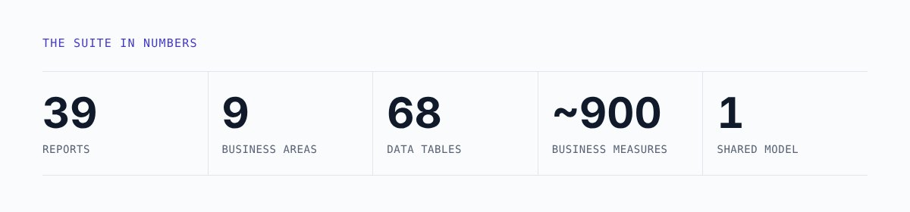
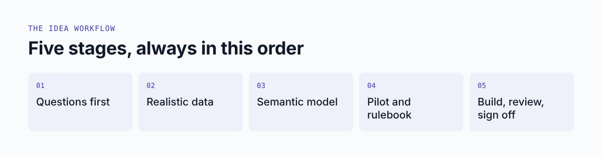
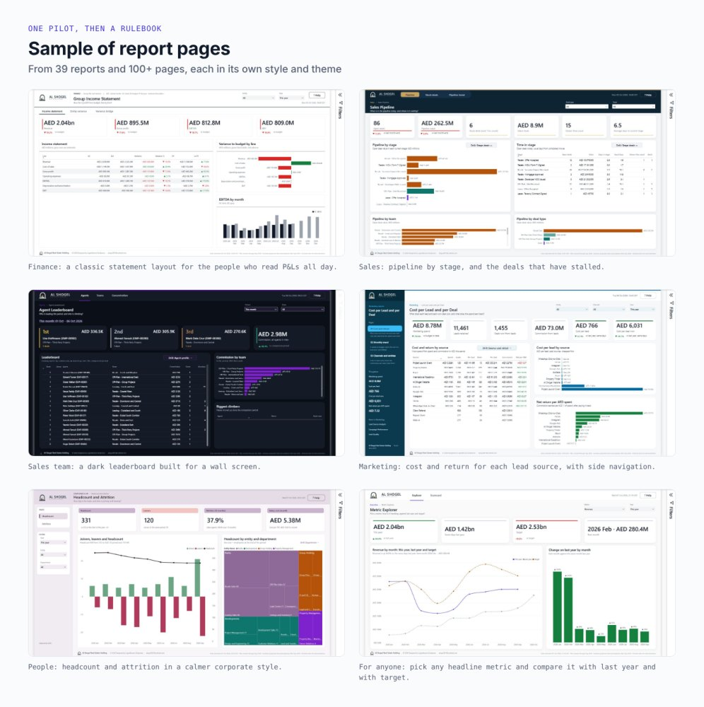
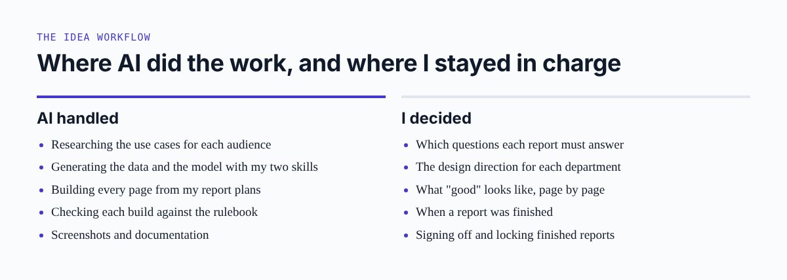

An Al-Assisted Workflow for Real Business Reporting: Beyond Dashboards
Logeshkumar Sivakumar · October 9, 2026 · 9 min read

One fictional company, nine departments, every report written for a named audience and a real decision. Here is the idea, the process, and where AI did the heavy lifting.
Most industry demos fall apart the first time a director asks a real question. The data is a toy, the dashboard has three charts, and nobody can say who the report is for or which decision it supports.
I wanted to try the opposite: a complete report suite for one company, built the way a real client engagement runs. AI did the heavy lifting. I made every decision that mattered.

The Idea
The company is fictional: a mid-sized group with several business lines and the usual departments around them. Leadership, finance, sales, marketing, operations, people and compliance all ask different questions about the same business, at different rhythms.
One dashboard can't serve all of them. A suite can, if every report has one audience and one job. The work followed five stages, always in this order:

Start with questions, not charts
Before any data existed, I wrote the report catalogue: 39 reports across nine business areas. Each entry names the decision it supports, who reads it and how often. "Which deals are stuck?" is for sales managers, every day. "Will the year land on budget?" is for the board, every month.
That list decided everything that followed, including which data had to exist and which measures the model needed.
Data that behaves like a business
Realistic data is where most demos cut corners, so I built a dedicated skill for it.
Demo Dataset Creator (Claude Skill)
My Demo Dataset Creator skill generates demo-ready datasets for any industry and audience. It starts by asking a short set of intake questions about the industry, the audience and the story the data needs to tell, and only then generates anything. A realism engine then shapes every table:
- Seasons and events. Holiday peaks, quiet months and market shocks appear where a reader would expect them.
- Local detail. Names, places and customer mixes match the geography.
- Numbers that reconcile. Lines add up to totals and ledgers tie out exactly, so no figure contradicts another.
- Plans as well as actuals. Actual, budget and forecast versions, with dates that run into the future so reports behave as if they're live.
The output is a repeatable, documented dataset, with a guide for report users and a technical guide for developers. For this suite it produced 68 tables.
A model built around the questions
Data alone doesn't answer anything. My second skill turns the dataset into a Power BI semantic model.
Enterprise PBIX Model Builder (Claude Skill)
My PBIX Model Creator skill runs straight after the dataset skill, or on its own from an existing Power BI file, and produces a model that's ready for report building:
- A star schema with the relationships already in place.
- Business measures grouped into folders by department, so each team finds its own numbers.
- A plain-language description on every table, column and measure.
- Documentation for both business users and developers.
From that base the model grew report by report, ending at around 900 measures in one shared model that all 39 reports use.
Report building, in stages
Report design has its own skill too. It works in stages, so each decision is agreed before the next one starts.
Microsoft Skill for Fabric · powerbi-report-cli
Microsoft’s Skill for Power BI reports covers requirements, design, authoring, and publishing. It asks scoping questions first, then works in the mode that fits the request, and it does not build or publish until you approve the plan. It can also validate the report files it writes before anything reaches a Fabric workspace.
- Planning. Turns requirements into a page plan and a locked report spec, then waits for your approval.
- Design. Recommends page layout, chart choices, colour, and accessibility, with a design brief for each page.
- Authoring. Writes the local report files and validates them, without publishing.
- Management. Publishes the report to a Fabric workspace and handles updates and rebinding.
The skill does not handle semantic model or DAX work, so that part of this build used the dataset and model skills described above.
One pilot, then a rulebook
The first report took the longest, on purpose. I reviewed it round after round: layout, wording, colors, what a click should do, where help should live. Every piece of feedback became a written rule. By sign-off the rulebook covered points like these:
- Every page reads like a website and fits one screen, with no scrolling.
- Every page and every visual has help text.
- A click filters the whole page; it never just highlights.
- Titles stay plain, with at most one data-driven story per page.
- Each department gets its own look, so no report feels copy pasted.
From then on, every new report had to pass those rules automatically before I reviewed it.

Same rules everywhere, a different look for each department. The rulebook keeps the quality consistent, and the design keeps each audience at home.
Where AI did the work, and where I stayed in charge
AI handled the research and the build. It researched the use cases for each audience, generated the demo data and semantic model with my two skills, and built every page from my report plans. It checked each build against the rulebook, and it produced the screenshots and documentation.
I made every decision that shaped the reports. I chose which questions each report had to answer and set the design direction for each department. I defined what good looked like on every page, decided when a report was finished, and gave the final sign-off that locked each report.

All 39 reports went through the same loop: build, review, adjust, sign off. AI made each loop fast. It never decided when a report was done.
When this approach fits
It fits whenever you need to show a complete, believable reporting solution before real data is available: pre-sales demos, proofs of concept, team training, or designing the target state before a platform migration.
Take a regional headquarters planning a new reporting suite across several markets. The teams can agree on the questions, the model, and the design using synthetic data, so no personal data is touched while the design is still changing. That keeps privacy reviews simple. Real data is connected only after sign-off.
Why it looks simpler than it is
The screenshots make the result look straightforward. Behind them are two purpose-built skills, a rulebook shaped by many review rounds, and automated checks that run on every build. That groundwork took the time, and it's also what makes the next industry suite much faster to deliver.
What comes next: Claude Dashboards and Claude Motion
In October 2026, Anthropic announced two beta features that fit parts of this process.
Claude Dashboards lets you ask a question in plain language and builds a live dashboard from connected data platforms such as Snowflake , Databricks , and BIGQUERY , with each chart showing when its data was last refreshed. Claude Motion builds short, animated explainers and animated charts from a written description and exports them as MP4 files.
I plan to use them in three ways.
- Claude Dashboards will be used to test a business question against a data source before it becomes a page in the suite.
- Claude Motion will turn the five-stage workflow into a short, animated explainer for LinkedIn video and the webinar series.
- The Reports, the shared Semantic model with Microsoft Fabric , and the Rulebook will stay in Power BI.
Anthropic describes Claude Dashboards as best suited to quick, exploratory questions rather than deep analysis, so governed, multi-page reporting still belongs in Power BI.
A Note on AI-Assisted Workflows
Every file this pipeline produces goes through manual review before it is used in a demo. The dataset, bim structure, DAX logic, relationships, measure descriptions, page layout, visual types and report interaction options are validated against the actual dataset and use case before deployment.
AI compresses the time between starting and having something to review - it does not replace the review itself. Always validate before sharing. The output is a strong starting point, not a finished product.
For teams exploring industry-specific analytics at scale, there's plenty more to discuss. 💬
References
- Enterprise Power BI Demo Automation with Claude - Dataset Generation, Semantic Modelling, and DAX in One Session
- skills-for-fabric/skills/powerbi-report-cli at main · microsoft/skills-for-fabric
- Build live dashboards and animate explainers with Claude
#PowerBI #MicrosoftFabric #BusinessIntelligence #DataModeling #SemanticModel #DAX #GenerativeAI #DataVisualization #ReportDesign #Analytics
© 2026 Logeshkumar Sivakumar. All rights reserved. The company, people and figures shown are fictional.
Linkedin post content
Most AI demos show a prompt and a finished dashboard. The real work happened in between.
I built a full Power BI report suite using Claude and two skills I wrote. The useful part was not speed. It was deciding where my judgment mattered.
1. The First skill 𝗴𝗲𝗻𝗲𝗿𝗮𝘁𝗲𝗱 𝘁𝗵𝗲 𝗱𝗮𝘁𝗮, starting with questions about the industry, audience, and story. It added seasonal peaks, local detail, and figures that reconcile.
2. The Second skill 𝗯𝘂𝗶𝗹𝘁 𝘁𝗵𝗲 𝘀𝗲𝗺𝗮𝗻𝘁𝗶𝗰 𝗺𝗼𝗱𝗲𝗹, with a star schema, department-grouped measures, and plain-language descriptions throughout.
3. The 𝗳𝗶𝗿𝘀𝘁 𝗿𝗲𝗽𝗼𝗿𝘁 𝘄𝗮𝘀 𝗮 𝗽𝗶𝗹𝗼𝘁. Every piece of feedback became a rule, such as one screen per page, help text on every visual, and whole-page filtering on click.
4. Every later report had to pass those rules before I reviewed it. When a rule changed, I updated the existing reports as well, so the whole suite stayed consistent.
AI researched each audience’s needs, built every page from my report plans, checked each build against the rulebook, and produced the screenshots and documentation.
I decided which questions each report had to answer, what good looked like on every page, and when a report was finished.
𝗧𝗵𝗲 𝗹𝗲𝘀𝘀𝗼𝗻 𝗜 𝘁𝗼𝗼𝗸 𝗮𝘄𝗮𝘆: AI made every loop faster, but it never decided when a report was done. Every new report would need the review from scratch.
𝗥𝗲𝗮𝗱 𝗙𝘂𝗹𝗹 𝗮𝗿𝘁𝗶𝗰𝗹𝗲 𝗯𝗲𝗹𝗼𝘄👇
Microsoft Power BI Anthropic Claude #PowerBI #BusinessIntelligence #DataModeling #GenerativeAI #DataVisualization #ReportDesign